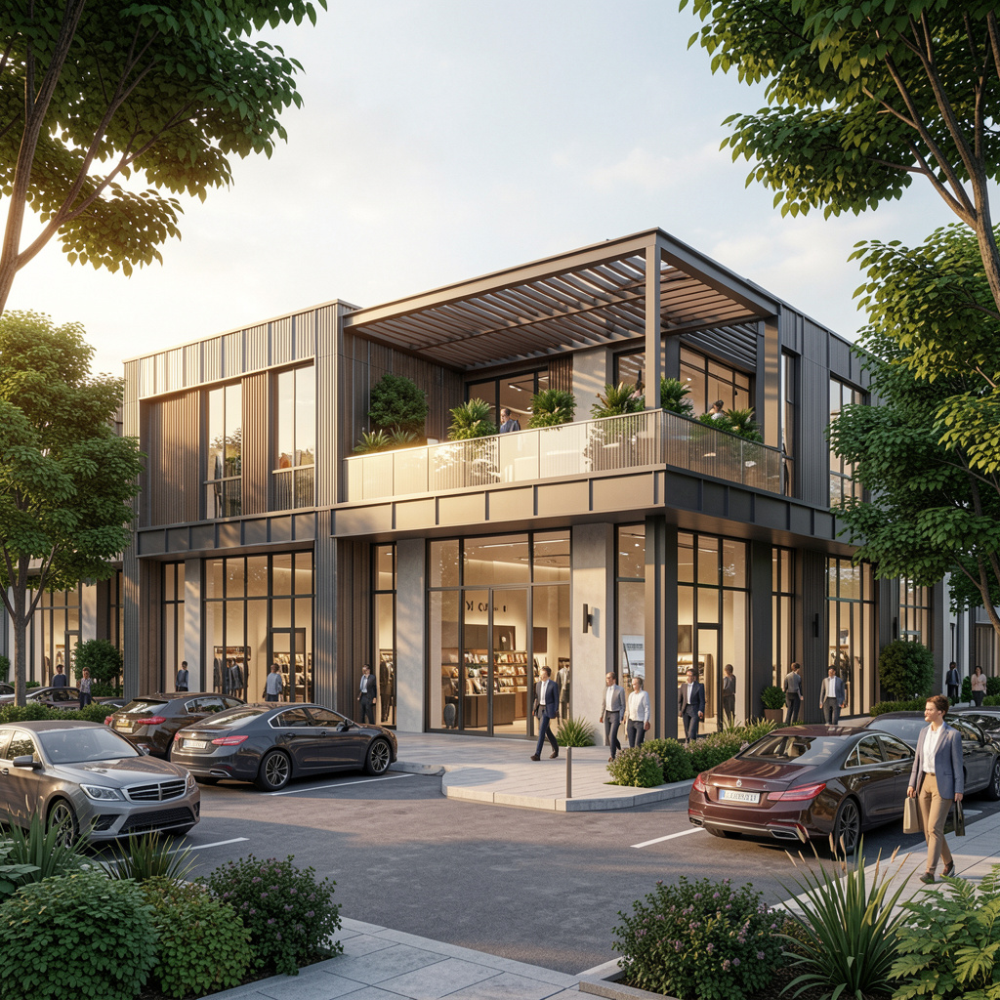

Plaza
Plaza Nordic
Centro comercial de arquitectura industrial-contemporánea que integra texturas de piedra, concreto visto y cristal. El complejo ofrece locales de doble altura en planta baja y una exclusiva terraza superior protegida por pérgolas de madera, diseñada para el flujo peatonal y la convivencia. Un espacio funcional que combina elegancia estructural con una experiencia de compra abierta y moderna.
Área total
2,700 m²
Unidades
30
Entrega
Diciembre 2025
Precio
A partir de $300,000
Descripción
Acerca del proyecto
Plaza Nordic fue concebida como un punto de encuentro que trasciende el concepto tradicional de centro comercial. La propuesta busca dinamizar el entorno urbano a través de una arquitectura honesta, donde el carácter rústico de la piedra y el concreto industrial se equilibran con la calidez de las pérgolas de madera. El proyecto se centra en la experiencia del usuario, fomentando una circulación orgánica que invita tanto a la compra rápida como a la permanencia prolongada. El diseño de doble altura en los locales de planta baja no solo maximiza el impacto visual de las marcas, sino que garantiza una sensación de amplitud y libertad espacial. La integración de la terraza superior actúa como un mirador social, diseñado para convertirse en el corazón de la actividad comercial y gastronómica de la zona. Plaza Nordic es un hito visual diseñado para unir la eficiencia de los negocios con el confort de una plaza pública moderna y abierta.

